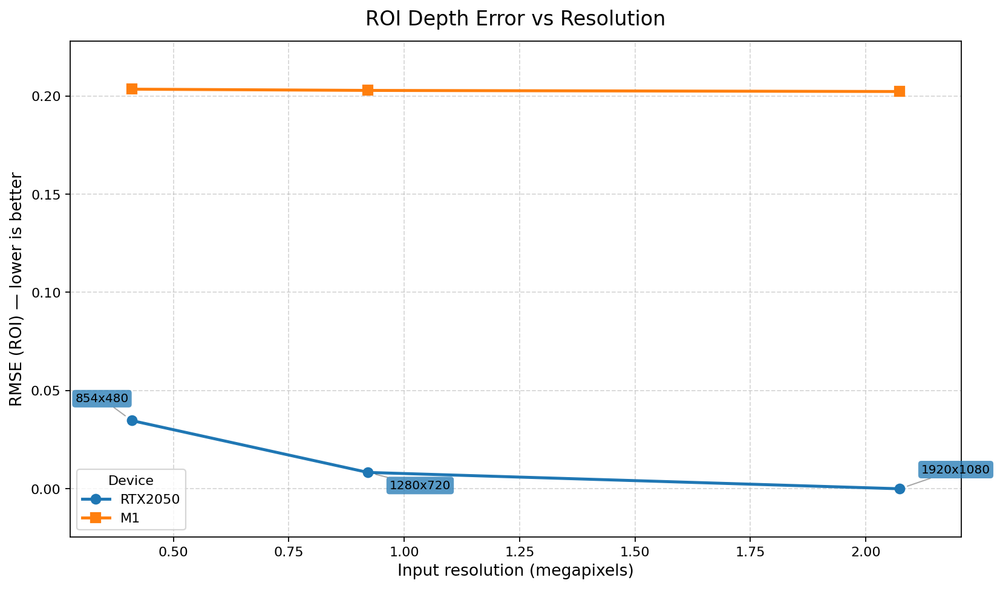
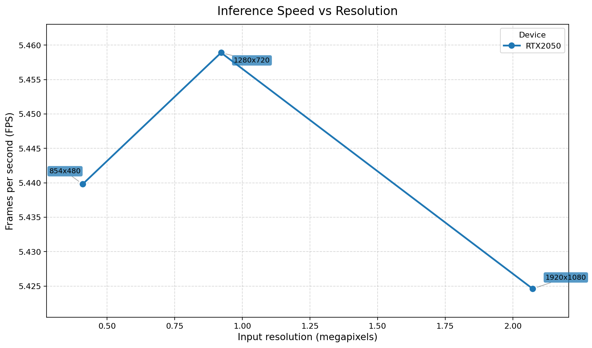
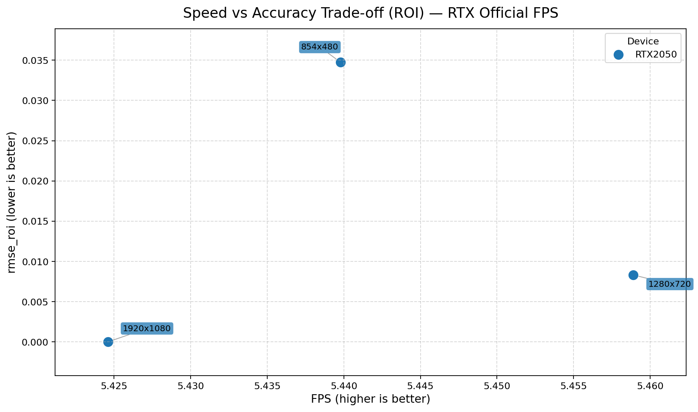
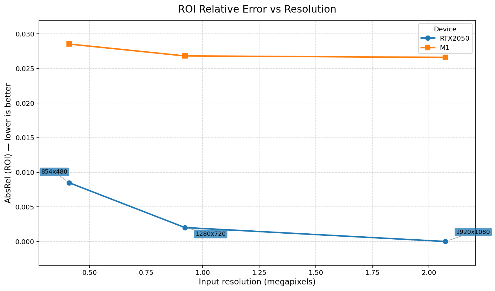
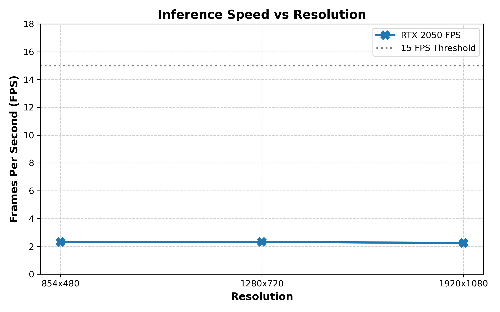
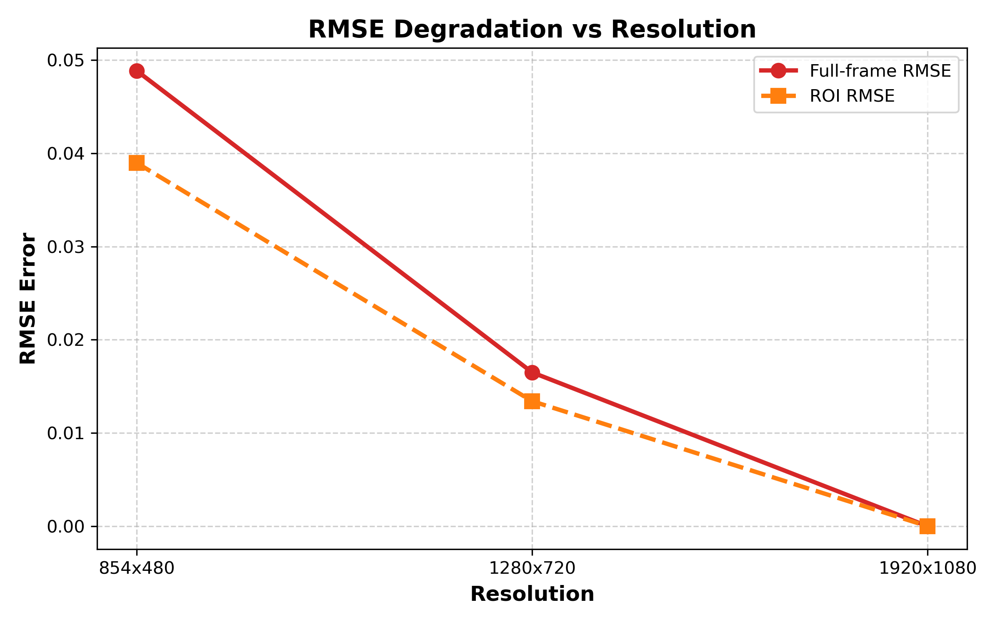
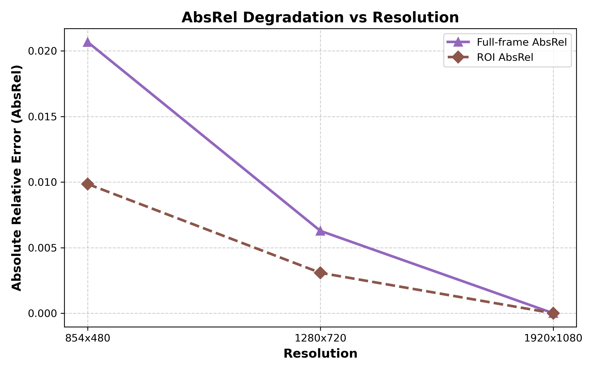
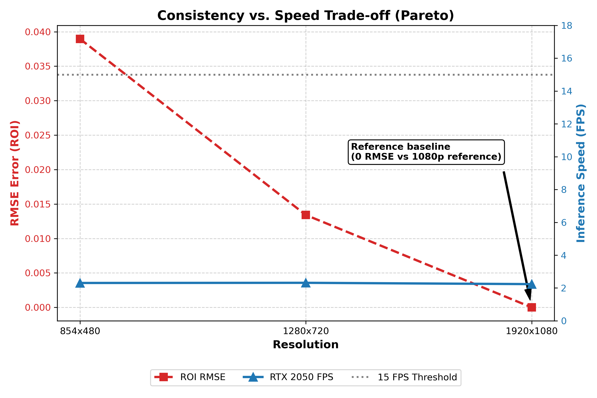
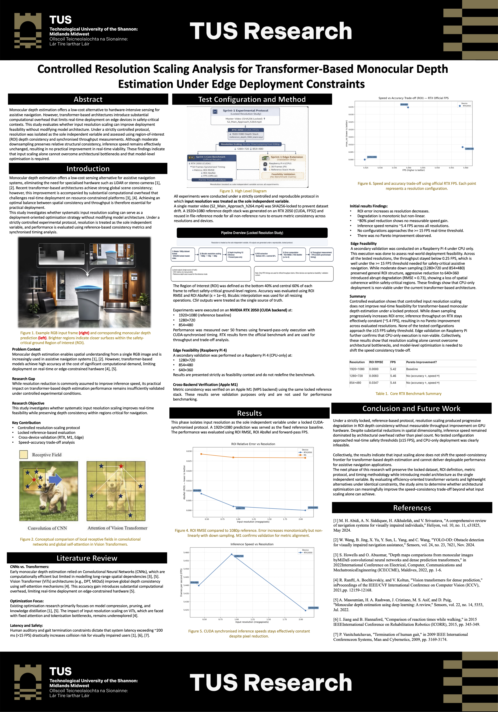

Results
Experimental findings, sprint outputs, research papers, and poster previews
Sprint 1 — Controlled Resolution Scaling Study
Sprint 1 isolated input resolution as the sole independent variable under a locked transformer-based evaluation protocol to determine whether downsampling could improve deployment feasibility without architectural modification.
Core Finding
No Pareto Improvement
Downsampling degraded structural consistency while throughput remained effectively unchanged.
Throughput Range
~5.42–5.46 FPS
Despite major pixel reduction, FPS remained constrained by architectural overhead.
Deployment Conclusion
Not Real-Time
No tested configuration approached the safety-relevant threshold of 15 FPS.
Sprint 1 Interpretation
Sprint 1 shows that resolution scaling alone does not shift the speed–consistency frontier for the tested transformer model. Moderate downsampling preserves relative consistency, but inference speed remains effectively fixed, confirming that the deployment bottleneck is architectural rather than input-size driven.
ROI RMSE vs Resolution

Progressive degradation in safety-critical ROI consistency was observed as resolution decreased.
FPS vs Resolution

Official RTX throughput remained effectively constant across the tested resolution band.
Speed–Accuracy Trade-Off

No configuration provided a meaningful speed–accuracy improvement under the locked protocol.
ROI AbsRel vs Resolution

Relative error remained low under moderate downsampling but still showed degradation as resolution decreased.
Sprint 1 Paper Summary
The first sprint paper, Controlled Resolution Scaling Analysis for Transformer-Based Monocular Depth Estimation Under Edge Deployment Constraints, established that controlled input downsampling does not improve real-time viability for the evaluated transformer-based model under a locked reference protocol.
All research artefacts, including papers, posters, and reproducibility materials, are centralised in the Resources section.
Sprint 1 Poster
This poster summarises the first sprint study, including motivation, locked protocol, controlled benchmark design, and the conclusion that input scaling alone cannot overcome architectural bottlenecks.

Poster Focus
- Problem context and deployment motivation
- Controlled resolution-scaling protocol
- Locked reference-based evaluation
- Cross-device validation structure
- Conclusion and future architectural study direction
Sprint 2 — Architecture-Level Trade-Off Analysis
Sprint 2 introduced model architecture as the primary independent variable and compared a transformer-based model with a CNN baseline under a strictly controlled and reproducible protocol.
Accuracy Leader
Transformer
Depth Anything maintained ROI RMSE below 1.0 across all evaluated resolutions.
Speed Leader
19.42 FPS
MiDaS achieved the highest throughput at 854×480, but with severe structural degradation.
Main Conclusion
Architecture Dominates
Model design, not input scaling, governs the speed–consistency trade-off.
Sprint 2 Interpretation
Sprint 2 demonstrates that architecture is the dominant factor in deployment feasibility. The transformer preserves structural consistency but remains too slow, while the CNN improves throughput but fails to maintain acceptable reliability in the safety-critical ROI. No evaluated configuration satisfied both real-time speed and acceptable structural accuracy.
FPS vs Resolution

The CNN baseline achieved substantially higher throughput, while the transformer remained below real-time requirements.
ROI RMSE vs Resolution

Transformer outputs remained structurally stable, whereas the CNN showed severe degradation in the safety-critical ROI.
ROI AbsRel vs Resolution

Relative error remained consistently lower for the transformer across all tested resolutions.
Speed–Accuracy Trade-Off (Pareto)

No evaluated configuration achieved both acceptable structural consistency and real-time throughput.
Sprint 2 Paper Summary
The second sprint paper, Architecture-Level Trade-Off Analysis for Monocular Depth Estimation Under Edge Deployment Constraints, shows that architectural design, rather than input resolution, governs the achievable balance between inference speed and structural consistency under safety-critical deployment requirements.
All research artefacts, including papers, posters, and reproducibility materials, are centralised in the Resources section.
Sprint 2 Benchmark Highlights
| Model | Architecture | Resolution | FPS | ROI RMSE | ROI AbsRel |
|---|---|---|---|---|---|
| Depth Anything | Transformer | 1920×1080 | 0.40 | 0.00 | 0.00 |
| Depth Anything | Transformer | 1280×720 | 1.80 | 0.27 | 0.057 |
| Depth Anything | Transformer | 854×480 | 6.96 | 0.96 | 0.191 |
| MiDaS | CNN | 1920×1080 | 4.09 | 0.00 | 0.00 |
| MiDaS | CNN | 1280×720 | 8.73 | 96.84 | 0.381 |
| MiDaS | CNN | 854×480 | 19.42 | 101.02 | 0.355 |
Sprint 2 Poster
The second poster will present the transformer-versus-CNN architecture comparison, benchmark results, reproducibility structure, and the conclusion that no evaluated configuration satisfies both real-time speed and acceptable structural reliability.

Poster Focus
- Architecture comparison under a locked protocol
- Transformer vs CNN speed–accuracy trade-off
- Cross-device reproducibility and validation
- Edge deployment limitations
- Research direction beyond input scaling
All research artefacts, including papers, posters, and reproducibility materials, are centralised in the Resources section.
Overall Research Progress
Together, Sprint 1 and Sprint 2 establish a clear research trajectory. Sprint 1 showed that input resolution scaling alone could not overcome deployment bottlenecks. Sprint 2 then demonstrated that architecture is the dominant driver of the speed–consistency trade-off. This progression provides a strong foundation for the next research phase focused on architectural efficiency and lightweight deployment strategies.